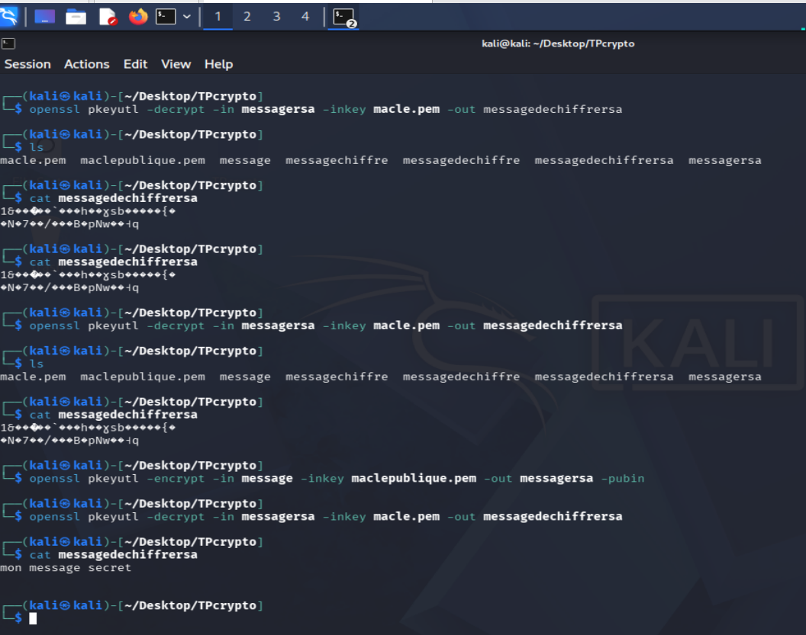
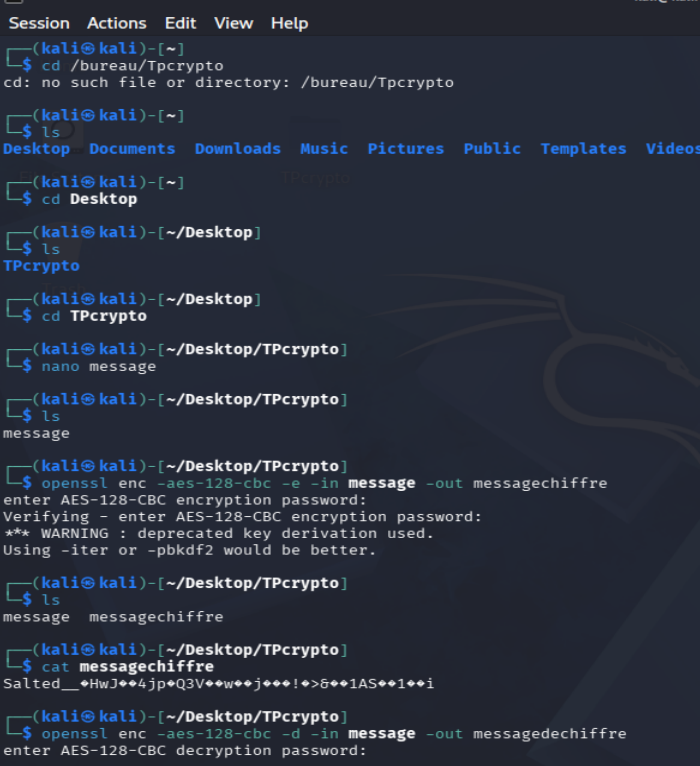
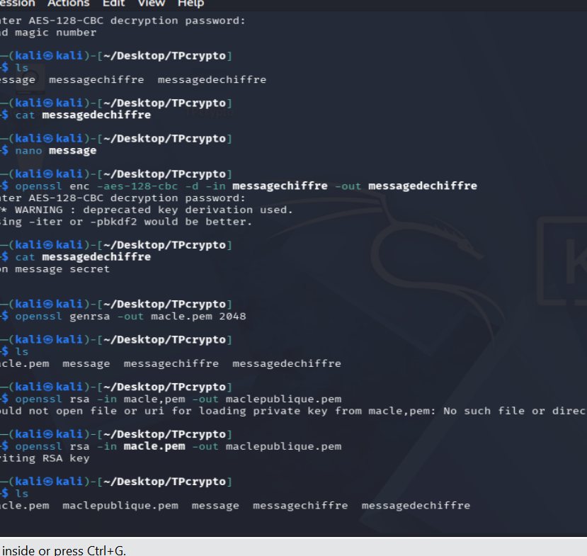
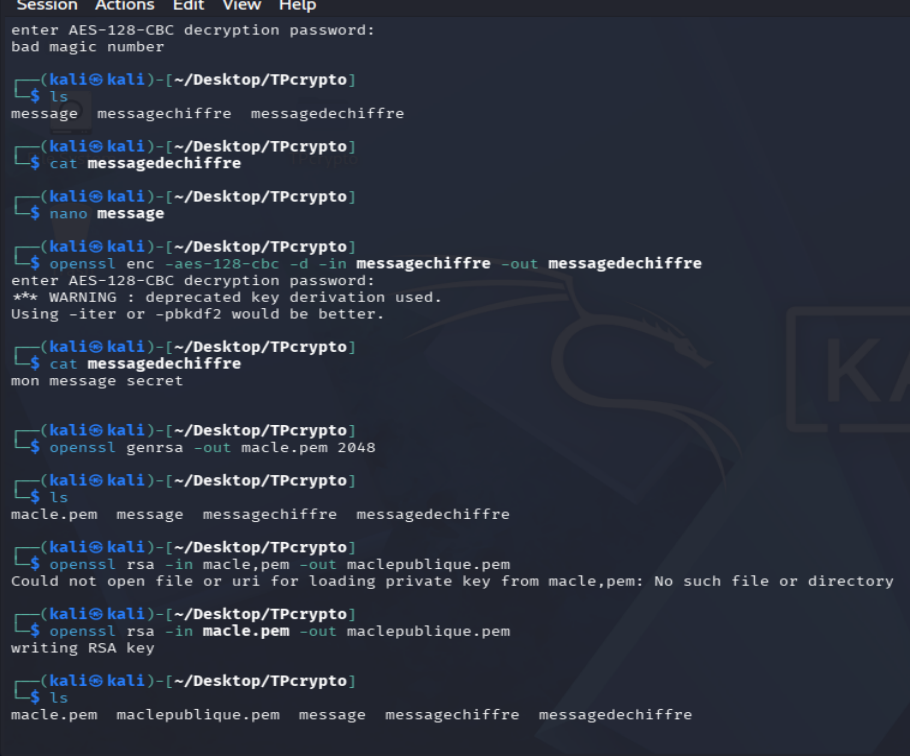

Projet : Surveillance intelligente d’une chambre de malade
Description : Ce projet a été réalisé dans le cadre
du module de conception générale des réseaux, dans le but d’évaluer
mes compétences pratiques. Il consiste
à mettre en place un système de surveillance permettant à un médecin
de suivre à distance les mouvements d’un patient dans sa chambre.
Fonctionnement : Le système repose sur un détecteur de mouvement installé dans la
chambre du malade. Lorsqu’un mouvement est détecté, les informations sont transmises
au médecin, lui permettant de surveiller l’état du patient en temps réel.
Architecture du projet : Le projet est structuré autour de deux environnements :
Maison 1 : représente le domicile du médecin
Maison 2 : représente la chambre du malade
Technologie utilisée :
Le projet a été réalisé avec Cisco Packet Tracer, un outil de simulation réseau largement
utilisé dans la formation en réseaux informatiques.
Équipements utilisés : Routeur , Switch , Câbles droits , Téléphone IP , Caméra , Serveur DHCP
Sirène d’alarme , Point d’accès (Wi-Fi) , Lampe connectée.
Projet : Application de gestion de répertoire téléphonique en C
Description :
Ce projet a été réalisé en groupe dans le cadre du module de langage C, comme évaluation
de fin de module. Il consiste à développer une application permettant de gérer un répertoire
téléphonique de manière efficace.
Ce projet a été réalisé en collaboration avec mes camarades de classe. Grâce à une bonne
organisation et un travail sérieux, nous avons réussi à valider le module avec la mention
bien, en obtenant une note de 15/20.
Objectif : L’objectif principal est de concevoir une application capable d’enregistrer,
consulter, modifier et supprimer des contacts dans un répertoire téléphonique.
Base de données :Le projet intègre une base de données MySQL reliée au programme en C,
permettant de stocker et gérer les informations des contacts de manière structurée et persistante.
Technologies utilisées : Langage C et MySQL.
Fonctionnalités principales : Ajout de contacts , Consultation des contacts ,Modification des informations
Suppression de contacts
Concepts utilisés : Fonctions , Variables , Structures , Chaînes de caractères , Boucles.
Projet : Génération de clés cryptographiques avec Kali-Linux
Description :
Ce projet a été réalisé après le module de sécurité informatique afin de mettre en pratique les notions apprises.
Il consiste à générer des clés cryptographiques (clé publique et clé privée) utilisées pour sécuriser les
communications et les données.
Objectif :
L’objectif est de comprendre les principes de base de la cryptographie et de maîtriser le processus
de génération de clés pour assurer la confidentialité et la sécurité des échanges.
Technologie utilisée : Kali Linux
Outils et méthodes :
Kali Linux est un système spécialisé dans les tests de sécurité informatique, permettant d’effectuer
des analyses, de protéger les systèmes et de gérer des connexions à distance.
Compétences développées :
Utilisation des commandes de base sous Linux
Compréhension des mécanismes de cryptographie
Gestion des clés publiques et privées
Initiation à la sécurité des systèmes



